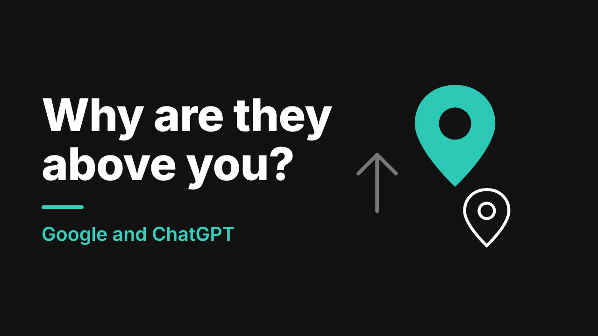

You search for your own service in your own city, and there they are: a competitor at the top. Their website isn't prettier than yours. Their cleaners aren't better. So why them?
Usually it is because they have done more of the plain, unglamorous things that Google counts. The good news is that every one of those things can be copied, and in many cases beaten. Here is what is really going on, what people are saying about AI tools like ChatGPT, and a 30-day plan to catch up.
First, see exactly where you stand
Before you change anything, spend three minutes checking:
- Open a private browser window on your phone and search "[your service] + [your city]".
- Write down who shows up in the map results and who shows up in the regular results below them. They can be different companies.
- Open ChatGPT and ask "Who is the best [your service] company in [your city]?" Note who it names.
- Take screenshots. Repeat once a month.
Results change with location and device, so treat this as a snapshot, not a score.
How Google decides who goes first
Google says local results are mainly based on relevance (how well you match the search), distance (how close you are to the searcher) and prominence (how well known you are). Google also says there is no way to request or pay for a better local ranking.
You can't change distance. If a competitor's office is closer to the customer, that is just the way it is. But relevance and prominence are in your hands, and that is where most companies fall behind.
Seven things your competitor probably has that you don't
Whitespark's 2023 survey of 44 local SEO experts (reported by Search Engine Land) gives a useful list. For the map results, the top factors included the main Google Business Profile category, how close the address is to the searcher, and high Google ratings. For the regular local results, the top factors were a dedicated page for each service, links between pages on your own site, links from quality websites, and place names in your content. Put in plain words:
- The right main category. Your main category on your Google Business Profile tells Google what you are. "Cleaning service" and "Janitorial service" are not the same thing.
- A page for each service. House cleaning, office cleaning, move-out cleaning and carpet cleaning each need their own page, not one long list.
- A page for each area. One page for each city, suburb or quarter you serve, with real details, not copied text.
- More recent reviews and a higher rating. Google says more reviews and positive ratings can help your ranking. Fresh reviews also show you are still active.
- Other websites linking to them. Local directories, the chamber of commerce, partner businesses, suppliers, local news. Google lists links to your website as part of how well known you are.
- The same details everywhere. Business name, address and phone number match on the website, the Google profile and every directory.
- A fast, clear site on a phone. Visitors who can't read the page or tap the phone number leave.
For a longer walkthrough, see our simple 90-day local SEO plan and our guide to Google Business Profile tips for Calgary cleaning companies.
The ChatGPT part: what is real and what is hype
More people are asking AI tools to name a cleaner. A 2026 press release citing BrightLocal's consumer survey says 45% of consumers now use AI tools to find local services, up from 6% a year earlier. The same release, citing SOCi's 2026 Local Visibility Index of more than 350,000 business locations, says ChatGPT recommends only about 1.2% of local business locations. It also says only about 45% of the businesses that do well in regular local search also show up in AI recommendations.
These are third-party figures, and nobody outside the AI companies can see how the tools pick. So treat them as a direction, not a formula. The direction is clear, though: ranking well on Google does not automatically mean AI tools will name you, and most local businesses are not being named at all.
Here is what Google itself says about its own AI features, in its guide to optimizing for generative AI:
- SEO still matters. Google's AI features are built on its normal search ranking and quality systems.
- Unique, helpful content that shows real experience is likely to matter more in the long run than any other tip.
- You don't need special markup or an llms.txt file to appear in Google's AI features.
- A Google Business Profile helps local businesses show up in AI answers.
That last list is good news. There is no secret trick, and anyone selling one should make you cautious. The work is real work: clear pages, honest content, consistent details and steady reviews. That is what our AI SEO for cleaning companies service focuses on, and we explain how the tools choose in how ChatGPT and Google AI Overviews choose cleaning companies.
A 30-day plan to catch up
| Week | Do this | Why it helps |
|---|---|---|
| 1 | Fix your Google Business Profile: main category, services, hours, photos, and replies to every review | Relevance and trust |
| 2 | Write one page for each service you sell | Matches the searches people make |
| 3 | Write one page for each area you serve, with a short FAQ on each | Local relevance and clear answers for people and AI tools |
| 4 | Start a steady review routine, and check that your name, address and phone match everywhere | Prominence and consistency |
After day 30, check your results once a month and keep adding. Our guide to getting more Google reviews covers the review routine, and if you are deciding between ads and organic work, read Google Ads vs local SEO.
Where this gets hard
On paper it is simple. In practice it takes a lot of hours: dozens of pages, consistent details across many sites, a review routine that actually runs, and a website fast enough to carry it all. If your site is on a builder, read why Wix, GoDaddy or Squarespace sites stop ranking first, because the site may be the first thing to fix.
This is the work we do for cleaning companies in Calgary and Dallas, and for owners further afield. Our web design for cleaning companies and local SEO for cleaning companies services are built to close exactly this gap.